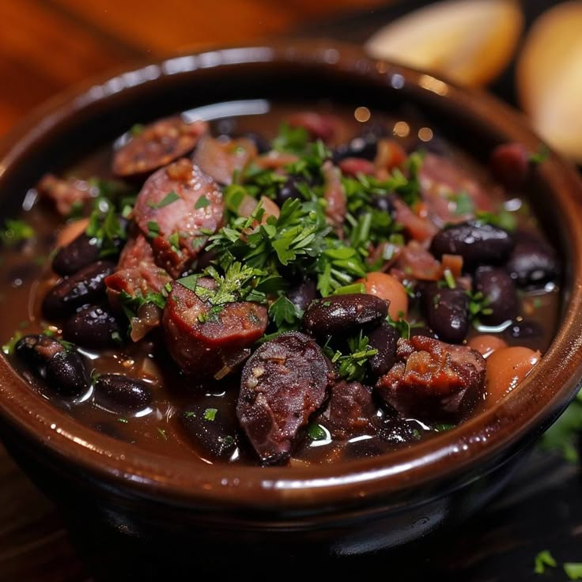

Feijoada

País: Brasil
Tipo: Normal
Momento: Almuerzo
Duración: 3 horas
Porciones: 6
üßÇ Ingredientes
- 500 g de frijoles negros
- 300 g de carne de cerdo
- 200 g de chorizo
- 1 cebolla grande
- 4 dientes de ajo
- 2 hojas de laurel
ü뮂Äçüç≥ Pasos
- Remojar los frijoles toda la noche
- Cocinar las carnes por separado
- Dorar cebolla y ajo
- Mezclar todo y cocinar a fuego lento 2 horas